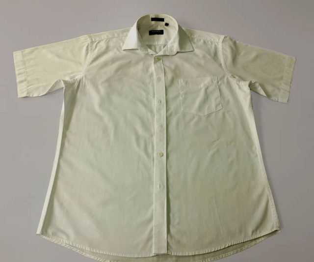

去色渍，不留印（纯白色衣服）
13-12-29
蓝月亮洗衣新主张：洗衣问题有千千万万种，可洗衣难题只有两个：
非“油”即“色”。
对于纯白色的棉、麻、涤纶的衣服，出现色渍用常规洗涤剂难以去除，使用蓝色月光（白衣专用）配合色渍浸泡法，轻松去除色渍不留印！不适用本品的可水洗衣服，请用蓝色月光（彩衣专用色渍净），易褪色衣服除外。
1
温馨提示：
- 不可用于有颜色的衣服，即使白底条纹、白底印花、白底格子的衣服也不可用；
- 不可用于丝、毛、氨纶等面料，及含以上面料的衣服；
- 不可直接使用原液，需稀释后使用；
- 不可直接将原液倒入洗衣机或洗涤剂注入口中，需先稀释，再浸泡衣服。
下面以衣服整体发黄为例，其他色渍方法一致。
正确步骤：
2
第一步：用蓝月亮亮白增艳洗衣液常规机洗或手洗
3
第二步：倒半盆水（约2L），加入40g蓝色月光，即600g装量取1瓶盖/1.2kg装量取半瓶盖，搅匀
4
第三步：将衣服放入溶液浸泡30分钟
*视需要可适当延长浸泡时间，若2小时后色渍未去除，将衣物取出，往盆中添加蓝色月光原液（每半盆水中加1瓶盖），搅匀，放入衣物继续浸泡，累计浸泡时常不超过6小时。
5
第四步：漂洗干净，衣物亮洁如新！
6
~~~~~~~~~~~~~~~~~~~~~~~~~~~
7